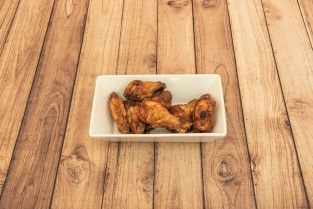
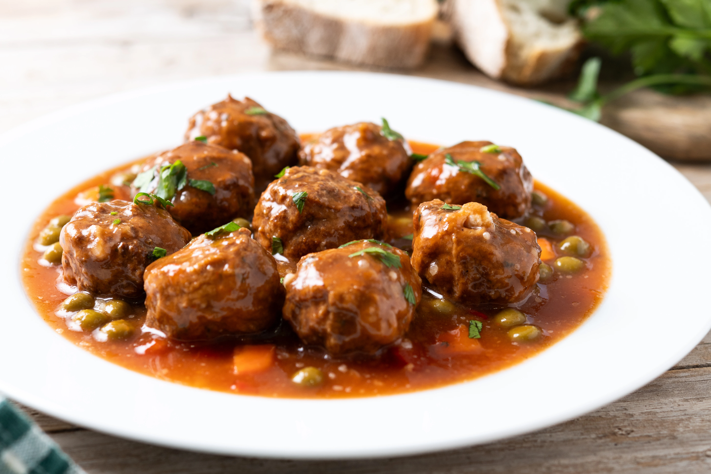
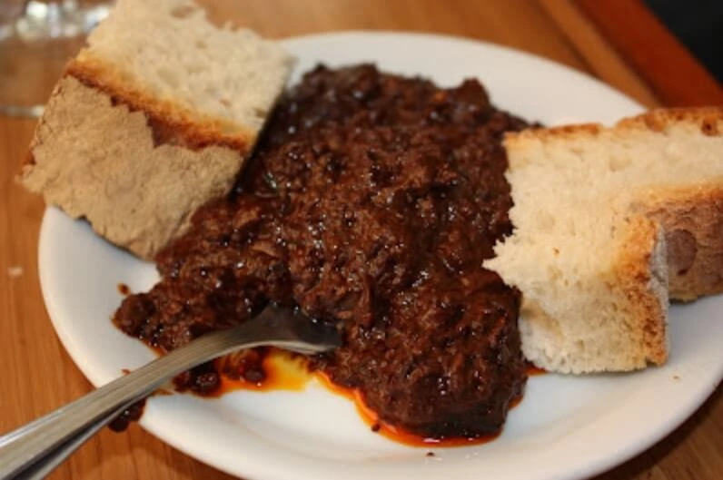
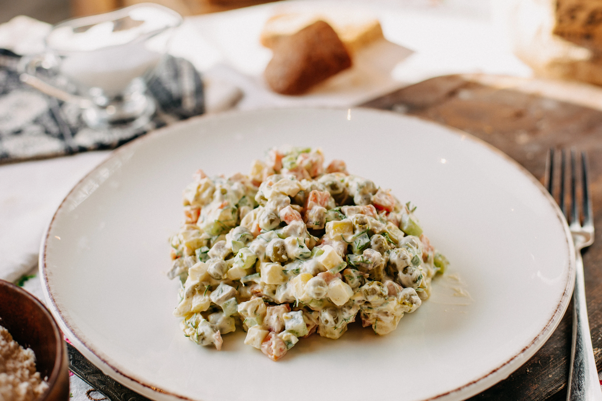
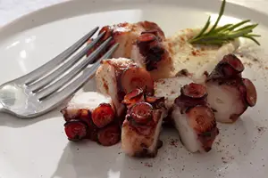
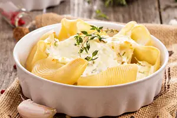
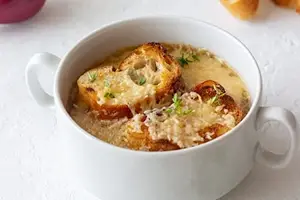
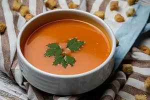
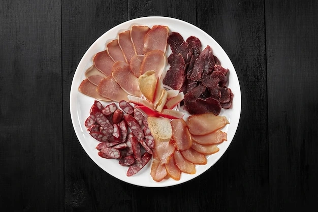

Bar manolo

Alitas
Alitas crujientes por fuera y jugosas por dentro.
Bar manolo

Albondigas
Jugosas albondigas con una salsa casera irresistible.
Bar Valdueza

Tortilla
Una tortilla con cebolla hecha al punto justo.
Bar Valdueza

Morcilla
Morcilla suave con un toque intenso sabor.
Bar Luisito el chiquito

Ensaladilla
Una cremosa mezcla de patatas, verduras y mayonesa.
Bar Luisito el chiquito

Pulpo
Un sabroso pulpo de las rias de galicia, con un toque de pimenton dulce.
Bar Gavela

Patatas Alioli
Crujientes patatas con una salsa alioli casera.
Bar Gavela

Sopas de ajo
Sopas tradicionales de ajo con un caldo espeso y reconfortante.
Bar Carlitos

Salmonejo
Suave crema de tomate fria con un toque de aceite de oliva.
Bar Cuarentena

Embutido
Un plato de embutido tradicional de la comarca de León.